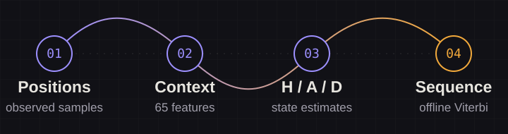

01 / TEAM LEAD
Kabir Niazi
Team lead · red teaming & web exploitation
Sets the direction, designs CTF challenges, and keeps the team moving within a clear scope.
MALWAROUS / EVIDENCE LAB
PUBLIC TRACKING / OFFLINE SEQUENCE MODEL
A football sequence model, opened for inspection. Trace public tracking observations through contextual features, state estimates, and an offline whole-half decoder.
Licensed observations · explicit gaps · offline decoding
SIGNAL PATH / SCHEMATIC

Synthetic software fixture · schematic and video are illustrative
No live feed or match footage.
FIELD NOTES / MODEL PATH
A traceable chain through the public sample. Each schematic below explains a stage; none represents match measurements.
Public tracking positions are shown with their observation support. Missing samples remain visible as gaps.
Open replay65 features use centered 0.4, 2 and 4 second windows, plus previous and next near-control observations within 5 seconds.
Trace the methodViterbi selects a coherent path with a transition penalty of 10 and future context. This is an offline decoder, not a live predictor.
Read the decoder method01 — SOURCE REPLAY
This view is reconstructed from approved public tracking observations. Positions are sampled for display; labels and benchmark values retain their published frame intervals.
REPLAY INSPECTOR Inspect, compare, understand.
Space play / pause · ← → one frame · Shift + ← / → previous / next H↔A change · ? help. Shortcuts pause while you use a form control or link.
OBSERVED POSITIONS
Select a published sequence to begin.
Choose a replay to draw the field.
Positions are held at the latest observation. Ball support age is shown at the selected frame; optional trails connect consecutive observed points and break at missing samples.
STATE BY FRAME
Click a timeline to inspect a spell. Use the frame controls for exact seeking.
External replay labels come from the published source and are provided for descriptive inspection.
02 — THE METHOD
A pair of shallow classifiers describes ball activity and team ownership. A whole-half decoder then selects a coherent path from those per-frame probabilities.
PROBABILITY DECOMPOSITION
a = live-ball estimate
h = home-ownership estimate
65 observable features use centered valid-support windows of 0.4, 2 and 4 seconds, plus previous and next near-control observations within 5 seconds.
Two shallow histogram-gradient-boosted heads estimate live/dead state and home/away ownership. Team-swap augmentation and symmetric prediction reduce side bias.
The live-ball estimate a gates the ownership estimate h: possession by either side is active-ball probability times side probability; dead ball is the remainder.
Viterbi selects a path across the full half with a transition penalty of 10. It uses future context, so this is an offline decoder—not a live causal predictor.
Possession states are model outputs, not calibrated confidence. Short possessions, provider-label semantics, and source-to-target shift remain meaningful limits.
03 — THE EVIDENCE
Six external matches already consumed in grouped development, evaluated across three excluded-match folds and three source scenarios.
—V1→—V2
—V1→—V2
Selection-conditioned grouped development
Reused-source evidence · not independent or target
| Match | Scenario | Spell F1 V1 | Spell F1 V2 | Macro F1 V1 | Macro F1 V2 | Inference s V1 | Inference s V2 |
|---|---|---|---|---|---|---|---|
| Published development measurements load with the approved public data. | |||||||
HOW TO READ THIS
These values describe reused-source grouped development, not independent or target performance.
SCOPE BOUNDARY
WMX 0.5240 is a descriptive artifact check on already consumed source data. V3/V4/V5 did not clear replacement gates; selected V2 remains unchanged.
PUBLIC SOURCES
Tracking data source ↗ CC BY 4.0 license ↗ Code and source manifest ↗ Source credit: Bassek, Rein, Weber and Memmert.05 — THE PEOPLE
The three-person competition team behind this build. Malwarous is a student-run cybersecurity community at Quaid-i-Azam University, Islamabad, established in 2026.
01 / TEAM LEAD
Team lead · red teaming & web exploitation
Sets the direction, designs CTF challenges, and keeps the team moving within a clear scope.
02 / WEB PLATFORMS
Web development · platforms & auth
Builds malwarous.dev, from account flows to event pages and the front-end details that connect them.
03 / MOBILE TOOLING
Mobile app development · event tooling
Builds mobile apps and helps the community with tooling, logistics, and event support.
COMMUNITY INVITATION
Challenge authors · workshop leads · builders
The wider Malwarous community keeps a seat open. This invitation is separate from the three-person competition roster.
Meet the community ↗Illustrative collaboration map and monogram marks. Names, professional roles and links: official team page ↗ · Community: malwarous.dev ↗